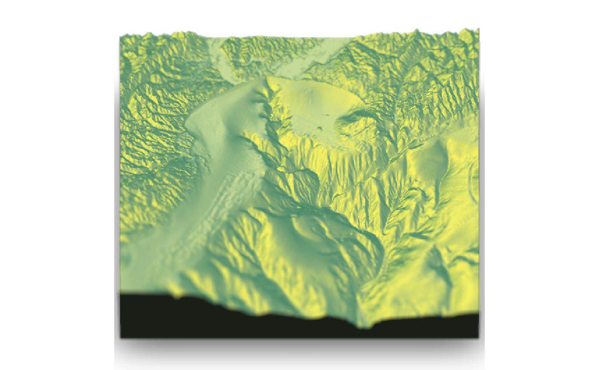
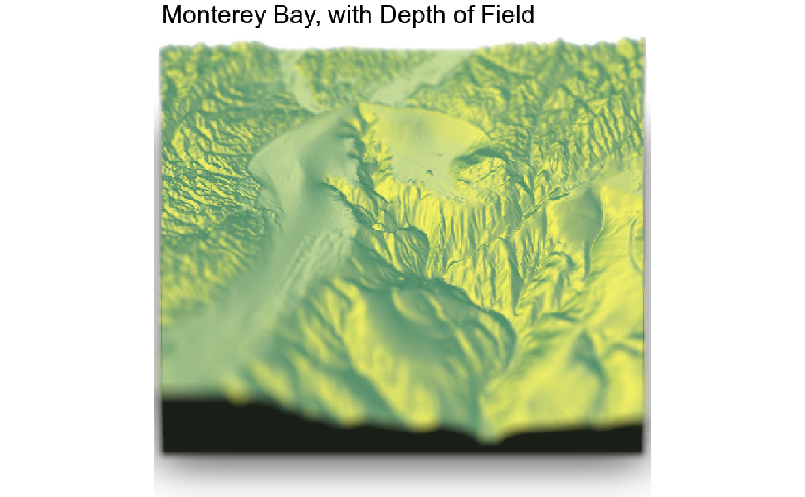

Adds depth of field to the current RGL scene by simulating a synthetic aperture.
The size of the circle of confusion is determined by the following formula (z_depth is from the image's depth map).
abs(z_depth-focus)*focal_length^2/(f_stop*z_depth*(focus - focal_length))
render_depth(focus = 0.5, focallength = 100, fstop = 4, filename = NULL, bokehshape = "circle", bokehintensity = 1, bokehlimit = 0.8, rotation = 0, gamma_correction = TRUE, transparent_water = FALSE, title_text = NULL, title_offset = c(20, 20), title_color = "black", title_size = 30, title_font = "sans", image_overlay = NULL, progbar = interactive(), clear = FALSE, ...)
| focus | Defaults `0.5`. Depth in which to blur. Minimum 0, maximum 1. |
|---|---|
| focallength | Default `1`. Focal length of the virtual camera. |
| fstop | Default `1`. F-stop of the virtual camera. |
| filename | The filename of the image to be saved. If this is not given, the image will be plotted instead. |
| bokehshape | Default `circle`. Also built-in: `hex`. The shape of the bokeh. |
| bokehintensity | Default `3`. Intensity of the bokeh when the pixel intensity is greater than `bokehlimit`. |
| bokehlimit | Default `0.8`. Limit after which the bokeh intensity is increased by `bokehintensity`. |
| rotation | Default `0`. Number of degrees to rotate the hexagon bokeh shape. |
| gamma_correction | Default `TRUE`. Controls gamma correction when adding colors. Default exponent of 2.2. |
| transparent_water | Default `FALSE`. If `TRUE`, depth is determined without water layer. User will have to re-render the water layer with `render_water()` if they want to recreate the water layer. |
| title_text | Default `NULL`. Text. Adds a title to the image, using magick::image_annotate. |
| title_offset | Default `c(20,20)`. Distance from the top-left (default, `gravity` direction in image_annotate) corner to offset the title. |
| title_color | Default `black`. Font color. |
| title_size | Default `30`. Font size in pixels. |
| title_font | Default `sans`. String with font family such as "sans", "mono", "serif", "Times", "Helvetica", "Trebuchet", "Georgia", "Palatino" or "Comic Sans". |
| image_overlay | Default `NULL`. Either a string indicating the location of a png image to overlay over the image (transparency included), or a 4-layer RGBA array. This image will be resized to the dimension of the image if it does not match exactly. |
| progbar | Default `TRUE` if in an interactive session. Displays a progress bar. |
| clear | Default `FALSE`. If `TRUE`, the current `rgl` device will be cleared. |
4-layer RGBA array.
montereybay %>% sphere_shade() %>% plot_3d(montereybay,zscale=50,zoom=0.6,theta=-90) render_depth(focallength = 30)render_depth(focallength = 30,fstop=2)render_depth(focallength = 30,fstop=2, bokehshape = "hex")#Add a title render_depth(focallength = 30,fstop=2, clear = TRUE, title_text = "Monterey Bay, with Depth of Field",title_offset = c(10,0))